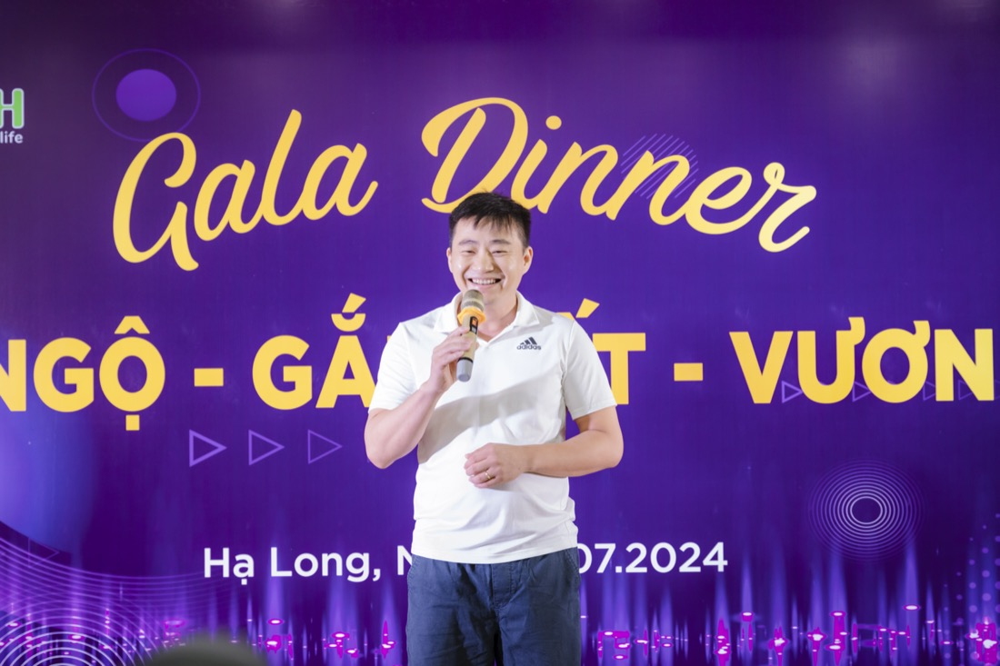
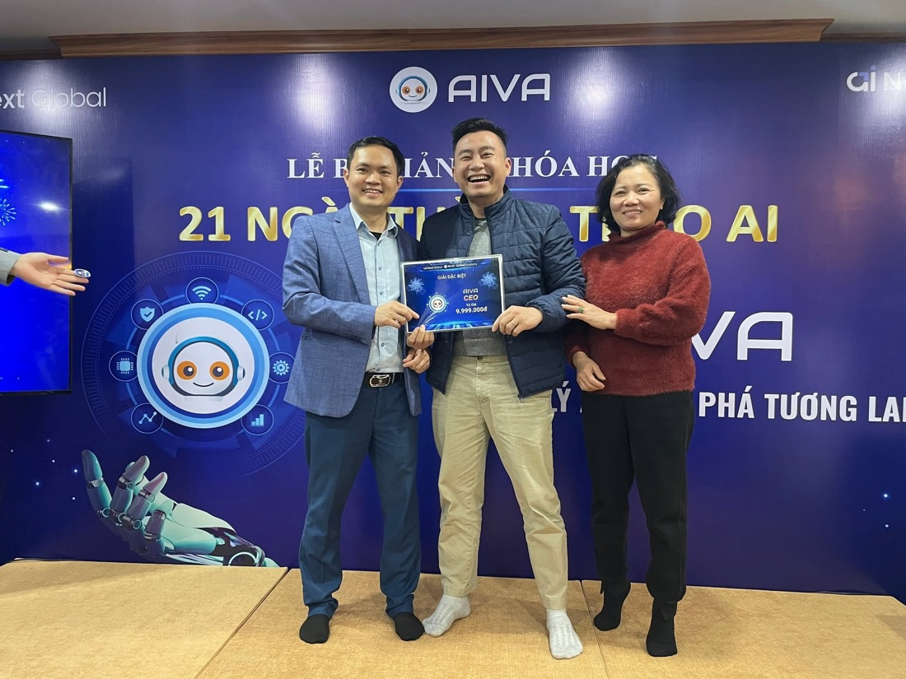
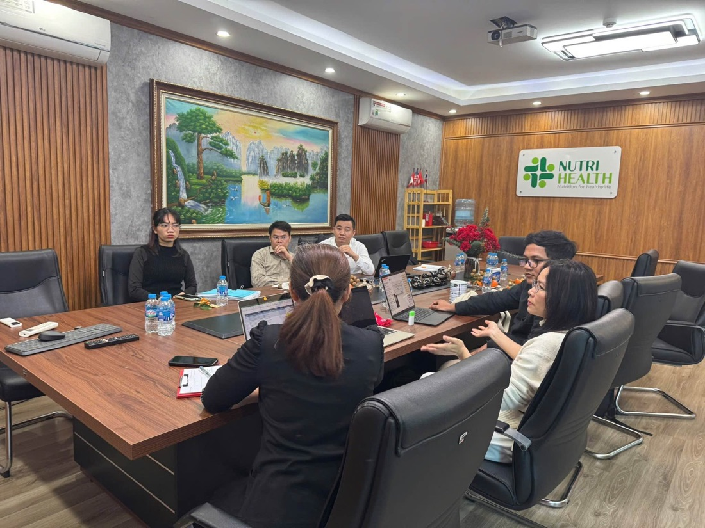
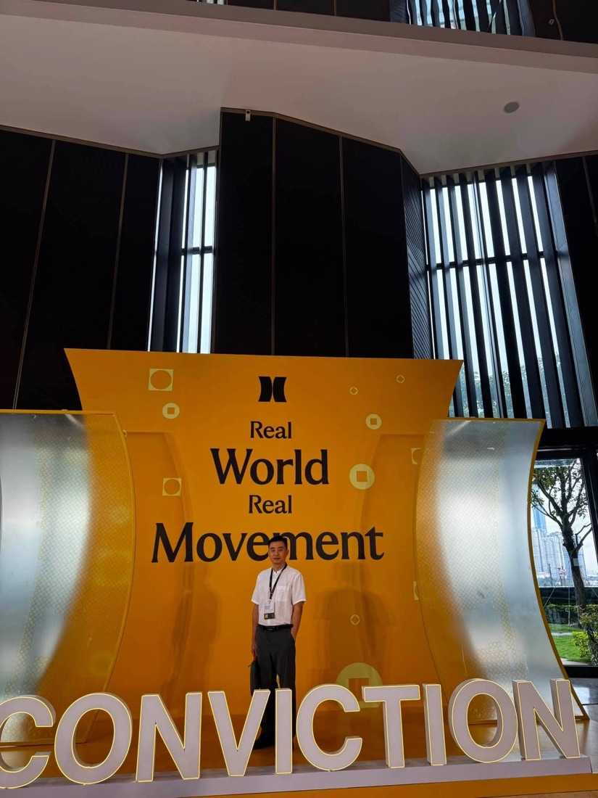
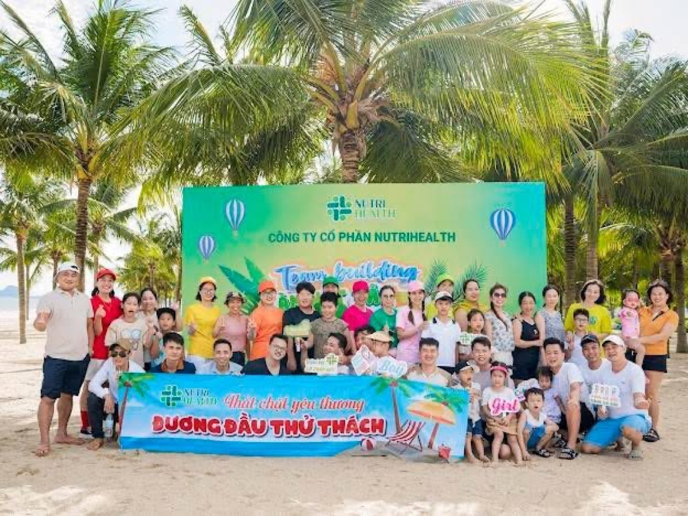

Việc lặp lại vẫn nằm trên bàn bạn
Tìm tài liệu, tổng hợp báo cáo, soạn phản hồi hoặc kiểm tra cùng một loại việc mỗi tuần.
Ưu đãi có hạn · Giá này giữ tới 23:59 hôm nay, sang ngày mai tăng thêm 99.000đ
5.000.000đ 1.000.000đ
Trong 21 ngày, bạn dựng một landing chạy thật và một AI workflow có Business Brain, Agent theo track, người phê duyệt, Test Log và ba lần chạy trên việc thật. Không cần code; cần công việc, dữ liệu mẫu và 45–60 phút thực hành mỗi ngày.
Không hứa “bấm nút là ra doanh thu”. Mục tiêu là một workflow có nguồn dữ liệu, test log và điểm phê duyệt rõ ràng.
BÀI TOÁN CỦA CHỦ DOANH NGHIỆP
Bạn có thể đã thử ChatGPT, lưu nhiều prompt và thấy AI trả lời khá tốt. Nhưng khi quay lại công việc, dữ liệu vẫn rải rác, mọi người vẫn hỏi lại từ đầu và bạn vẫn phải tự ghép từng bước.
Tìm tài liệu, tổng hợp báo cáo, soạn phản hồi hoặc kiểm tra cùng một loại việc mỗi tuần.
Mỗi lần hỏi là một lần giải thích lại bối cảnh. Đầu ra khó giao cho người khác chạy tiếp.
Không rõ Agent lấy thông tin từ đâu, xử lý sai khi nào và ai là người phê duyệt cuối.
MỘT VÍ DỤ MINH HỌA
Giả sử đội ngũ thường xuyên hỏi cách xử lý một tình huống vận hành. Thay vì tìm trong nhiều file rồi trả lời thủ công, bạn có thể thiết kế workflow hỗ trợ tra cứu SOP.
Đây là sơ đồ minh họa cách học, không phải kết quả đã đạt của học viên.
CƠ CHẾ THỰC HÀNH
Không cần hoàn thành mọi thứ trong một buổi. Bạn đi theo nhịp 21 ngày, nộp sản phẩm đã làm và biết rõ bước nào cần sửa.
Hướng dẫn ngắn, một mục tiêu và một đầu ra cụ thể cho ngày đó.
Áp dụng vào tài liệu, dữ liệu mẫu và quy trình mà bạn có quyền sử dụng.
PASS khi đủ tiêu chí; REVISE phải sửa và nộp lại; BLOCKED cần được gỡ vướng trước khi tiếp tục.
Ngày 7, 14 và 21 nhìn lại chất lượng workflow, test và demo.
Nhịp đề xuất: dành khoảng 45–60 phút thực hành mỗi ngày. Để hoàn thành, bạn phải nộp đủ 21/21 nhiệm vụ, sửa bài REVISE đến khi PASS, demo workflow và nộp video feedback ngày 21.
LỘ TRÌNH 21 NGÀY
Ba tuần đi theo một mạch liên tục: dựng nền và kiểm chứng, xây Agent và kiểm thử, sau đó đưa workflow vào việc thật để đo kết quả và demo.
Hoàn tất tài khoản AI, công cụ làm việc, nơi lưu tài liệu và quyền truy cập group hỗ trợ. Chọn một công việc lặp lại; xác định người sử dụng, input, output, người phê duyệt và thời gian xử lý hiện tại.
Kết quả: Checklist công cụ + quyền truy cập group + Intake Card + baseline.Xác định mục tiêu, đối tượng đọc và hành động chính. Dùng AI hỗ trợ xây cấu trúc, viết nội dung và hoàn thiện landing page phiên bản đầu. Landing này tiếp tục được dùng ở ngày 3, 4 và 6.
Kết quả: Landing page v1.Hoàn thiện các thành phần cơ bản, publish và kiểm tra trên máy tính, điện thoại. Bảo đảm người dùng có thể truy cập, hiểu nội dung và thực hiện hành động chính.
Kết quả: Link landing page public hoạt động được.Đưa landing cho một nhóm nhỏ đúng đối tượng; ghi nhận lượt truy cập, câu hỏi, hành vi, điểm chưa hiểu và phản hồi thực tế để xác định nội dung cần điều chỉnh.
Kết quả: Traffic/Feedback Log có bằng chứng.Gom SOP, tài liệu, thông tin sản phẩm, ví dụ, quy tắc và dữ liệu liên quan. Mỗi nguồn ghi rõ nguồn gốc, quyền sử dụng, người phê duyệt và cách cập nhật.
Kết quả: Business Brain/Knowledge Base v1.Sales tạo form thu lead và ba lead mẫu; Content tạo Content Intake Form và ba ghi chú/case/câu hỏi mẫu; Operations tạo Request/SOP Intake Form và ba tình huống vận hành mẫu. Kết nối form với landing khi phù hợp.
Kết quả: Input Form theo track + 3 input mẫu chuẩn hóa.Rà lại landing, feedback, Business Brain, dữ liệu mẫu, rủi ro, owner, output và điểm người duyệt. Chỉ chuyển sang build Agent khi workflow đủ rõ.
Kết quả: Workflow Charter đạt PASS.Phân tích những giải pháp đang xử lý cùng bài toán; so sánh quy trình, trải nghiệm, bằng chứng, mức kiểm soát và khoảng trống workflow có thể giải quyết tốt hơn.
Kết quả: Positioning Card.Xác định vai trò, mục tiêu, nguồn, bước xử lý, định dạng đầu ra và giới hạn. Sales phân loại lead và soạn follow-up; Content tạo insight, brief và bản nháp; Operations tra tài liệu, tạo checklist/báo cáo và escalation.
Kết quả: Agent Spec + Approval Rule.Theo dõi input, người phụ trách, trạng thái, bước tiếp theo, output, người phê duyệt và kết quả từng lần chạy. Payment automation và CRM đầy đủ thuộc giai đoạn nâng cao.
Kết quả: Run Board/CRM-lite sử dụng được.Nối input từ form hoặc dữ liệu mẫu với Business Brain, Agent, người duyệt và output thành một luồng hoàn chỉnh trước khi thêm tính năng hoặc tự động hóa sâu.
Kết quả: Workflow v1 chạy end-to-end.Kiểm thử ca đúng, thiếu dữ liệu, dữ liệu mâu thuẫn, yêu cầu ngoài phạm vi và hành động cần phê duyệt; ghi lại lỗi, cách sửa và bằng chứng chạy lại.
Kết quả: Test Log + video test ngắn.Tinh chỉnh instruction, nguồn dữ liệu, logic xử lý, format đầu ra và escalation. Agent phải biết khi nào xử lý, khi nào hỏi lại và khi nào chuyển người phụ trách.
Kết quả: Agent v1 theo đúng một track.Đặt Agent, Business Brain, form và Run Board vào workspace hosted/no-code; review tuần 2 và đóng các lỗi chặn trước khi chạy tác vụ thật.
Kết quả: Working Workspace + biên bản review tuần 2.Chạy workflow trên tối thiểu ba tác vụ thật; ghi timestamp, input, output, người duyệt, nội dung phải sửa và trạng thái cuối cùng.
Kết quả: 3 run thật có log.Chuyển cách làm đã kiểm thử thành hướng dẫn, template, checklist hoặc rule để có thể chạy lại và bàn giao theo cùng tiêu chuẩn.
Kết quả: Skill/Rule v1.Sales tạo chuỗi follow-up và bản nháp tin nhắn/email; Content tạo lịch và bản nháp nội dung; Operations tạo checklist, báo cáo hoặc hướng dẫn xử lý. Người phụ trách duyệt trước khi gửi, đăng hoặc sử dụng.
Kết quả: Track Workflow + Approval/Escalation Log.Content tạo video/hình ảnh; Sales tạo video giới thiệu, sales asset hoặc nội dung follow-up; Operations tạo video hướng dẫn, sơ đồ SOP hoặc tài liệu trực quan.
Kết quả: 1 asset video hoặc 1 đầu ra thay thế phù hợp với track.Vẽ vai trò Agent, đầu vào/đầu ra, handoff, quyền truy cập và điểm người kiểm soát. Ngày này chỉ yêu cầu thiết kế, chưa bắt buộc xây Agent Team chạy thật.
Kết quả: Agent Team Map.So sánh thời gian, lỗi, chất lượng, độ nhất quán hoặc khả năng bàn giao với baseline ngày 1; xác định cải tiến tiếp theo, chỉ số và người chịu trách nhiệm.
Kết quả: Before–After Scorecard + roadmap 30 ngày.Trình bày luồng từ input đến output, nguồn dữ liệu, điểm người duyệt, lỗi đã xử lý, kết quả trước–sau và kế hoạch tiếp tục sử dụng. Ghi lại video demo, hoàn thiện hồ sơ bằng chứng và quay video feedback.
Kết quả: Verified Workflow Live Package gồm video demo, Workflow Charter, Agent Spec, Test Log, Scorecard, Evidence Card, roadmap 30 ngày và video feedback.VPS, API, n8n/Make nâng cao, payment automation, CRM đầy đủ, auto-post, hệ thống video AI nâng cao và Agent Team chạy thật thuộc Advanced Lab, không phải yêu cầu bắt buộc của Core Challenge.
ĐIỀU KIỆN HOÀN THÀNH
BLOCKED là trạng thái cần được hỗ trợ, không phải trạng thái hoàn thành.
BỘ ĐẦU RA
Những tài liệu này giúp workflow có thể được kiểm tra, bàn giao và tiếp tục cải thiện sau challenge.
Một landing page chạy thật, form theo track và bằng chứng phản hồi đầu tiên từ đúng đối tượng.
Knowledge Base v1 kèm danh sách nguồn, quyền sử dụng, người phê duyệt và quy tắc cập nhật.
Workflow Charter, Agent Spec, Approval Rule và Agent v1 được cấu hình cho đúng một track.
Một workflow chạy end-to-end, đặt trong workspace dùng được và có tối thiểu ba lần chạy thật có log.
Test Log, video test, Approval/Escalation Log và Before–After Scorecard để chứng minh chất lượng.
Hồ sơ cuối gồm video demo, Evidence Card, Agent Team Map, roadmap 30 ngày và video feedback.
CHỌN MỘT HƯỚNG ỨNG DỤNG
Mỗi học viên chọn một trong ba track và tập trung hoàn thiện một workflow chính. Track được chốt khi bài toán, dữ liệu mẫu và người phê duyệt đã đủ rõ.
Lead → phân loại → đề xuất bước tiếp theo → soạn nháp phản hồi → người phụ trách duyệt.
Đầu ra: Lead Form, chuỗi follow-up nháp và Approval LogGhi chú và câu hỏi khách hàng → insight → brief → bản nháp đúng giọng → người duyệt.
Đầu ra: Content Intake, lịch nội dung và Approval LogTình huống → tra Business Brain → checklist/báo cáo → người phụ trách duyệt → escalation.
Đầu ra: SOP Intake, checklist/báo cáo và Escalation LogNGƯỜI ĐỒNG HÀNH
CEO Visun Holdings, Co-Founder Nutrihealth — điều hành doanh nghiệp và đào tạo CEO, chủ SME ứng dụng AI vào công việc hằng ngày.
Hơn 17 năm kinh nghiệm thực tiễn, trong đó khoảng 10 năm điều hành và phát triển doanh nghiệp trong lĩnh vực thiết bị y tế, dược phẩm và dinh dưỡng, cùng hai lần thất bại kinh doanh khiến tôi nhìn AI rất thực tế: công cụ chỉ có giá trị khi đi vào một quy trình mà người dùng hiểu và kiểm soát được.
“Tôi không muốn bạn rời chương trình với thêm một danh sách tool. Tôi muốn bạn biết chọn một việc, xây quy trình cho nó và tự kiểm chứng đầu ra.”
— Hùng Trịnh
HOẠT ĐỘNG THỰC TẾ





ĐẦU VÀO CẦN CÓ
Không yêu cầu biết code. Bạn cần máy tính, internet, một công cụ AI có thể sử dụng và nơi lưu tài liệu. VPS, API hay CRM không phải điều kiện đầu vào.
NGUYÊN TẮC KHÔNG BỎ QUA
Workflow tốt phải biết lúc nào không được tự làm tiếp. Vì vậy chương trình đưa nguồn dữ liệu, test case và human approval vào ngay từ đầu.
HỌC PHÍ & ĐĂNG KÝ
Core Challenge tập trung vào một workflow chính: học theo nhiệm vụ, tạo đầu ra, kiểm thử và demo. Các phần tích hợp nâng cao chỉ triển khai khi bạn đã có nền tảng đủ rõ.
Advanced Lab, không bắt buộc trong Core: VPS riêng, API, n8n/Make nâng cao, payment automation, CRM đầy đủ, auto-post, hệ thống video AI nâng cao, Agent Team chạy thật và Multi-Agent orchestration.
Từ ngày mai, học phí tăng thêm 99.000đ. Đăng ký hôm nay để giữ mức thấp nhất.
Học phí cho Core Challenge với một trong ba track. Trang chưa thu tiền trực tiếp; lịch khai giảng, hướng dẫn thanh toán và chính sách hoàn/hủy cần được xác nhận qua email trước khi thanh toán.
Đăng ký tham gia ngay Form mở email nháp; bạn cần bấm Gửi trong ứng dụng email. Hùng phản hồi để hướng dẫn thanh toán sau khi nhận được email.CÂU HỎI THƯỜNG GẶP
Nếu vẫn còn câu hỏi về việc chọn workflow, bạn có thể gửi tình huống của mình ở form cuối trang.
Hỏi ChatGPT là bạn tự nhập lại bối cảnh mỗi lần, tự copy kết quả rồi tự làm tiếp. Một AI Agent trong chương trình được gắn với nguồn dữ liệu cố định đã duyệt, đi theo các bước xử lý đã định và có điểm người phê duyệt trước khi ra kết quả cuối — nên chạy lặp lại nhiều lần mà không cần giải thích lại từ đầu, và người khác cũng chạy được theo đúng cách bạn thiết lập.
Bạn có thể hình dung như một quy trình được cấu hình sẵn: nhận input theo đúng cấu trúc, tự tra cứu nguồn được phép dùng, xử lý theo các bước đã định, và biết báo khi thiếu dữ liệu hoặc cần người quyết định. Khác với việc mở ChatGPT hỏi từng câu, Agent được thiết lập để làm đúng một việc theo cùng một cách mỗi lần.
Có thể theo Core Challenge nếu bạn có một việc lặp lại, dữ liệu mẫu và sẵn sàng thực hành. Không yêu cầu viết code, VPS hay API.
Không. Bạn có thể bắt đầu bằng một công cụ AI và một nơi lưu tài liệu. Chi phí công cụ trả phí, nếu có, không nằm trong học phí và sẽ do bạn tự quyết định.
Không có cam kết doanh thu. Mục tiêu là xây và kiểm thử một workflow có thể chạy lại; kết quả kinh doanh còn phụ thuộc vào dữ liệu, thị trường và cách triển khai.
Không. Bạn chỉ chọn một track và tập trung hoàn thiện một workflow chính trong 21 ngày.
Bạn chọn track khi đăng ký hoặc chậm nhất trong tuần đầu. Track chỉ được chốt khi workflow, dữ liệu mẫu và người phê duyệt đã đủ rõ.
Chỉ nên đổi trước khi Workflow Charter được PASS ở ngày 7. Sau ngày 7, việc đổi track có thể khiến toàn bộ dữ liệu, Agent Spec và workflow phải làm lại.
Landing page là nơi trình bày bài toán, offer hoặc workflow, tiếp nhận input và hướng người dùng đến hành động chính. Landing được sử dụng tiếp trong các nhiệm vụ traffic, feedback và tạo form.
Bạn phải hoàn thành 21/21 nhiệm vụ, nộp đủ toàn bộ output bắt buộc, sửa các bài REVISE đến khi đạt PASS, hoàn thành demo và nộp video feedback ngày 21.
BLOCKED có nghĩa là bạn đang thiếu dữ liệu, quyền truy cập, quyết định hoặc hỗ trợ kỹ thuật. Bạn cần xử lý điểm chặn và nộp lại; BLOCKED không được tính là hoàn thành.
Chỉ dùng dữ liệu mà bạn có quyền sử dụng. Ẩn danh hoặc loại dữ liệu nhạy cảm trước khi đưa vào bài tập; hành động quan trọng cần người phê duyệt.
Có. Video feedback là một phần của Verified Workflow Live Package ngày 21. Việc sử dụng video công khai chỉ được thực hiện theo phạm vi consent mà bạn đã xác nhận.
Core Challenge giúp bạn hoàn thành một workflow no-code/low-code có dữ liệu, Agent, người phê duyệt, Test Log và Evidence Card. VPS, API, n8n/Make nâng cao, payment, CRM đầy đủ, auto-post và Agent Team chạy thật thuộc Advanced Lab.
Không. Đây là học phí giới thiệu, tăng thêm 99.000đ mỗi ngày kể từ 21/09/2026 cho đến khi đạt mức chính thức 5.000.000đ. Mức hiển thị ở banner đầu trang và phần Học phí được tính theo ngày ở Việt Nam; đăng ký càng sớm, học phí càng thấp.
Sau khi bạn gửi email đăng ký từ form cuối trang, Hùng phản hồi qua email để xác nhận lịch khai giảng theo đợt và hướng dẫn thanh toán. Chỉ điền form mà chưa bấm Gửi trong ứng dụng email thì thông tin chưa được chuyển tới Hùng.
Landing này chưa thu tiền. Chính sách hoàn/hủy và dời cohort chưa được công bố tại đây; hãy xác nhận các điều kiện đó với Hùng qua email trước khi thanh toán.
Form hiện tạo một email nháp trên thiết bị của bạn; điền và bấm Gửi trong ứng dụng email là bạn hoàn tất đăng ký. Thông tin được dùng để xác nhận đăng ký và phản hồi về chương trình. Không có dữ liệu nào được tự động lưu trên landing này.
AI không đợi ai. Người biết dùng AI đang tiến xa hơn mỗi ngày.
BẮT ĐẦU TỪ MỘT VIỆC THẬT
Điền form để tạo email đăng ký, rồi bấm Gửi trong ứng dụng email. Hùng phản hồi sau khi nhận được email để xác nhận lịch khai giảng và hướng dẫn thanh toán.
Điền thông tin bên dưới. Ứng dụng email của bạn sẽ mở một bản nháp đăng ký để bạn kiểm tra và bấm Gửi.
Quyền riêng tư: thông tin chỉ rời thiết bị khi bạn bấm Gửi trong ứng dụng email. Bấm Gửi là bạn hoàn tất đăng ký; landing không tự lưu lead trên máy chủ nào khác.
Nếu ứng dụng email không mở, bạn có thể đăng ký trực tiếp bằng cách gửi email tới hungtrinhth@gmail.com.